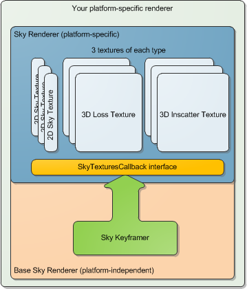

Base Sky Renderer¶
-
class simul::sky::BaseSkyRenderer : public simul::base::Referenced, public crossplatform::BaseRenderer¶
The base class for real-time sky renderers.
The Sky Renderer performs the following tasks:
Rendering stars: using RenderPointStars(void *context,float exposure)
Rendering planets (e.g. the Moon): using RenderPlanets(void *context,float exposure)
Rendering the sun, using RenderSun(void *context,float exposure)
See BaseWeatherRenderer::Render and RenderMixedResolution.
The rendering of the sky is no longer handled by BaseSkyRenderer because the atmospherics renderer now does this in a single pass including both sky and atmospherics.
It is the job of the Sky Renderer to update the atmospherics textures to be used by the other render classes, and render celestial objects.
The fade tables are stored as 3D textures - an axis for distance, one for elevation, one for altitude. The table size is given by NumElevations, NumDistances and SetNumAltitudes() of SkyKeyframer. Try to minimize the number of altitudes required, in order to maximize performance, and use SetAltitudeRangeKm on initialization to the range you will use.
BaseWeatherRenderer::PreRenderUpdate first calls EnsureTexturesAreUpToDate, which fills in the fade textures with loss and inscatter values.
Then, the sky and atmospheric scattering (atmospherics, or distance-fades) are drawn together as an overlay after the depth-buffer has been filled by any solids in the scene (see ). There are two main elements to realistic atmospherics: Loss, and Inscatter.
Keyframe X
Keyframe X+1
Keyframe X+2
loss 0
loss 1
loss 2
inscatter 0
inscatter 1
inscatter 2
skylight 0
skylight 1
skylight 2
Each texture contains data for the atmospherics as seen from a complete range of altitudes.
We use textures 0 and 1 to render the scene. Texture 2 is gradually filled in over multiple frames, so that when we reach keyframe X+1, it will be complete and can be swapped in. All this is handled automatically by the SkyKeyframer, which in turn can use a GpuSkyGenerator. If using CPU-generated textures, the Sky Renderer asks the keyframer what new data to fill into the textures each frame. If using its own GpuSkyGenerator, the Sky Renderer has access to these textures without the need to query the keyframer.

The fade textures are 3D, with co-ordinates representing x=altitude/max altitude, y=1+sine(elevation))/2, z=distance/max distance. Each frame, these three pairs of 3D textures (Keyframe X and X+1) are combined into three individual 2D textures, with x=distance/max distance, y=1+sine(elevation))/2, representing the fade colours as seen at the present time, from the current viewing altitude.
The last texel in the x direction is considered to represent infinity, irrespective of the specified MaxDistanceKm parameter, so a distance texture coordinate of 1.0 in the inscatter and skylight textures represents the sky, with values less than one used for atmospheric scattering over solid objects.
Public Functions
-
inline virtual BaseGpuSkyGenerator *GetBaseGpuSkyGenerator()¶
Get a pointer to the Sky Generator.
-
LightingQueryResult GetLightingQuery(int id, const float pos[3])¶
Get the results of a lighting query, and update it for next time. If this is the first call, the returned struct will have valid=false.
Get the results of a lighting query.
-
virtual BaseGpuSkyGenerator *CreateGpuSkyGenerator(base::MemoryInterface *m)¶
Override this to create a custom generator.
-
virtual void ReloadTextures()¶
Platform-dependent function to reload the textures - only use this for debug purposes.
-
virtual void RecompileShaders()¶
Platform-dependent function to reload the shaders - only use this for debug purposes.
-
virtual void RestoreDeviceObjects(crossplatform::RenderPlatform *renderPlatform)¶
Platform-dependent function called when initializing the sky renderer.
-
virtual void InvalidateDeviceObjects()¶
Platform-dependent function called when uninitializing the sky renderer.
-
virtual bool RenderPointStars(crossplatform::GraphicsDeviceContext&, const crossplatform::ViewStruct &viewStruct, crossplatform::Texture *depthTexture, vec4 viewportTextureRegionXYWH, float, float, int)¶
Draw the stars.
-
virtual bool RenderFades(crossplatform::GraphicsDeviceContext &deviceContext, int view_id, int x, int y, int w, int h)¶
Draw the 2D fades to screen for debugging.
-
virtual void RenderCelestialDisplay(crossplatform::GraphicsDeviceContext &context, float y_heading = 0.0f)¶
Draw sidereal and geographic information to screen.
-
virtual void RenderLightingQueryResultsText(crossplatform::GraphicsDeviceContext &deviceContext, int x = 0, int y = 0)¶
Display LightingQueryResults to screen for debugging.
-
inline virtual void SaveTextures(const char*)¶
Save the current texture set to disk. Useful, but not necessary for normal operation.
-
simul::sky::SkyKeyframer *GetSkyKeyframer()¶
Get a pointer to the fade table.
-
simul::sky::BaseSkyInterface *GetBaseSkyInterface()¶
Get the interface to the sky object so that other classes can use it for lighting, distance fades etc.
-
simul::sky::SiderealSkyInterface *GetSiderealSkyInterface()¶
Get the sidereal sky interface - if using one, returns NULL otherwise.
-
void SetOvercastCallback(simul::sky::OvercastCallback *ocb)¶
Inform the sky renderer of a callback to use to get overcast information.
-
simul::sky::float4 GetLightColour(float alt_km)¶
Returns the current directional light colour as a float4 (x=red, y=green, z=blue, w unused), i.e. sunlight or moonlight. This is a high-dynamic range value.
-
float CalcSunOcclusion(crossplatform::GraphicsDeviceContext&, float cloud_occlusion)¶
Get a value, from zero to one, which represents how much of the sun is visible. Call this when the current rendering surface is the one that has obscuring objects like mountains etc. in it, and make sure these have already been drawn. GetSunOcclusion executes a pseudo-render of an invisible billboard, then uses a hardware occlusion query to see how many pixels have passed the z-test.
-
inline float GetSunOcclusion() const¶
Get a value, from zero to one, which represents how much of the sun is visible.
-
virtual void RenderSun(crossplatform::GraphicsDeviceContext&, const crossplatform::ViewStruct &viewStruct, crossplatform::Texture *depthTexture, vec4 viewportTextureRegionXYWH, float exposure, crossplatform::Quaterniond q)¶
Draw the sun.
-
void RenderPlanets(crossplatform::GraphicsDeviceContext&, const crossplatform::ViewStruct &viewStruct, crossplatform::Texture *depthTexture, vec4 viewportTextureRegionXYWH, float exposure)¶
Draw planets in the sky, e.g. the Moon.
-
virtual void RenderPlanet(crossplatform::GraphicsDeviceContext&, const crossplatform::ViewStruct &viewStruct, crossplatform::Texture *tex, crossplatform::Texture *depthTexture, vec4 viewportTextureRegionXYWH, float rad, const float *dir, const float *colr, bool do_lighting, float exposure)¶
This is called by RenderPlanets to render a planet with texture tex, angular radius rad radians, in direction dir (x,y,z), with colour colr. If do_lighting is true, the planet will be directionally-lit - e.g. moon phases.
-
PlanetStruct *GetPlanet(int index)¶
Get the planet structure identified by index.
-
void SetPlanetImage(uid u, crossplatform::Texture *tex, bool lighting, bool render)¶
Set the texture for planet index to tex.
-
crossplatform::Texture *GetLightTableTexture()¶
Get a texture that represents the variation of sunlight, moonlight, ambient and total directional light with altitude.
-
crossplatform::Texture *GetIlluminationTexture()¶
Get the 2D texture that represents the extent of illuminated atmosphere visible in any given direction on a per-frame basis.
-
void SetBackgroundTexture(crossplatform::Texture *t)¶
Get some per-frame text information for debugging - usually timing data.
-
void RenderAurora(crossplatform::GraphicsDeviceContext &deviceContext, const crossplatform::ViewStruct &viewStruct, crossplatform::Texture *depthTexture, vec4 viewportTextureRegionXYWH, float exposure, crossplatform::Quaterniond &cloudWindowOrigin)¶
Draw the Aurora.
-
virtual void PreRenderUpdate(crossplatform::GraphicsDeviceContext &deviceContext)¶
Once per-frame update. Do this before any rendering each frame.
-
virtual void RenderIlluminationBuffer(crossplatform::GraphicsDeviceContext &deviceContext)¶
Perform any necessary updates to the renderer’s textures - particularly the loss, inscatter and skylight textures - at the start of a frame. This is called from simul::clouds::BaseWeatherRenderer::PreRenderUpdate().
-
virtual void EnsureTexturesAreUpToDate(crossplatform::GraphicsDeviceContext &deviceContext)¶
Maintains the per-frame textures.
-
virtual bool Render2DFades(crossplatform::GraphicsDeviceContext &deviceContext, int numDist = -1, int numElev = -1)¶
This fills in the 2D atmospheric fade textures once per-frame from the keyframed 3D fade textures.
Public Static Functions
-
static void EnsureEffectsAreBuilt(crossplatform::RenderPlatform *r)¶
Check that all shaders have been correctly compiled.